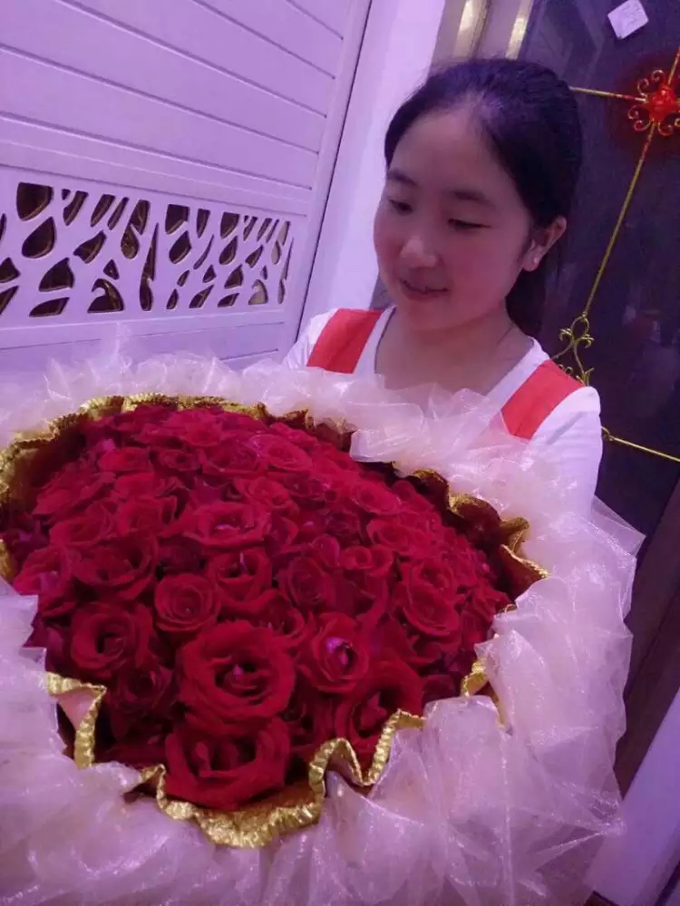
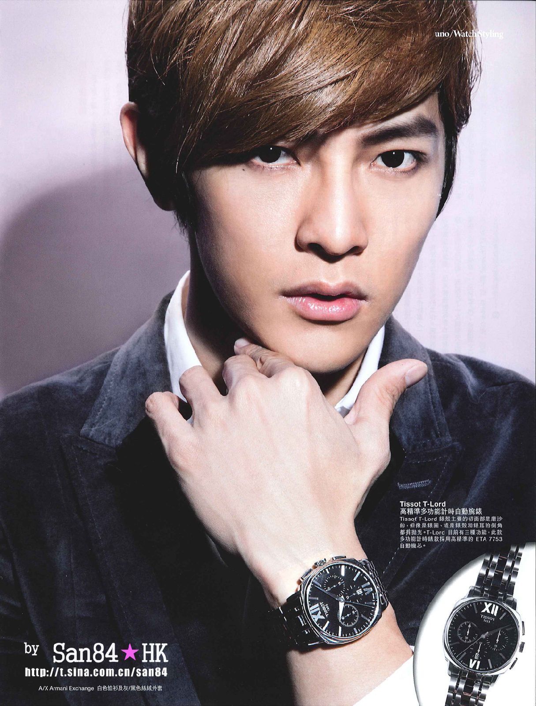
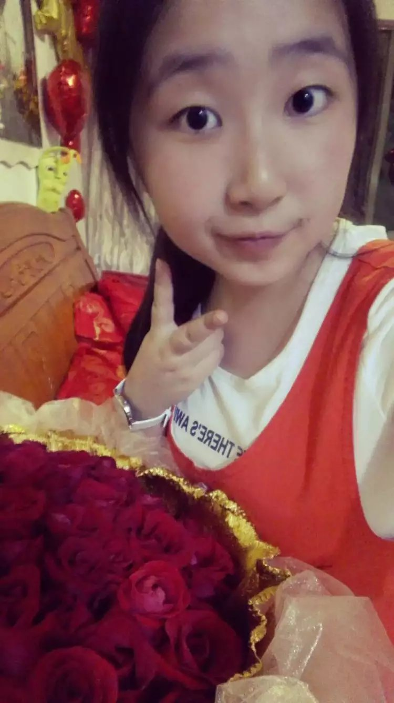
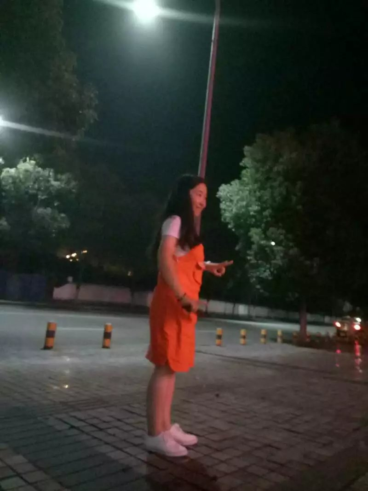
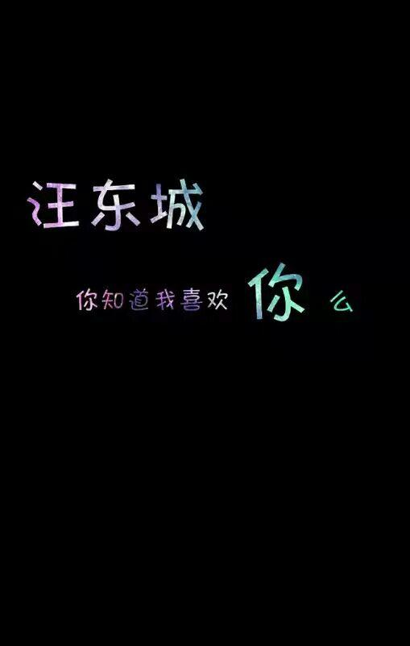

我知道你特别喜欢大东。 一个让我们从终极一班的那个老大让我熟知。

从终极一到终极四让我们了解。


加油，以后如果有机会就可以一起去看他的演唱会。

大东的代表作《恶作剧之吻》《终极一班》《花样少年少女》《翻滚吧！蛋炒饭》渐渐的让我们了解他。
小可爱不知是否可以这样叫你。 倔强是女汉子的保护色，加油。这是你的专属名词。
一个从小就肩扛起家庭重担。
从模特到演员进而歌手不断向前打拼的动力。

国庆快要到了，祖国妈妈的生日到了。2016年也只剩下了20%
可爱的小柯柯，好久都没有看到你了，想你了怎么办，要天天开心的。从高中到现在，我就知道你是个活泼的女孩子。
自认为是女汉子，在高中我就很少看见你哭泣，
我也觉得你和其他女生不一样，是一个特别可爱的姑娘。
天天开心是你的标志，爱你哟！
从进入大学开始，就已经知道，我们需要一步步的向前走。加油我们是勇敢的青少年。